Taj Mahal
 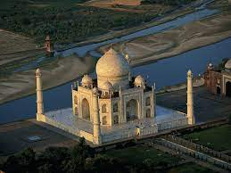
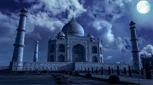
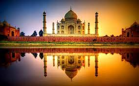
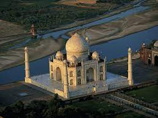
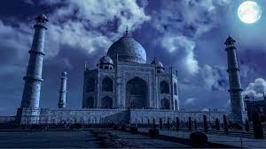
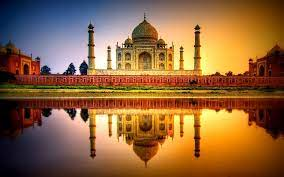
The Taj Mahal is an iconic white marble mausoleum located in Agra, India. It was built by the Mughal Emperor Shah Jahan in memory of his wife Mumtaz Mahal. The construction of the Taj Mahal started in 1632 and was completed in 1653. It is renowned for its exquisite architecture, intricate carvings, and beautiful gardens. The Taj Mahal is a UNESCO World Heritage Site and one of the New Seven Wonders of the World.
Red Fort
 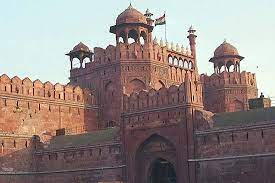
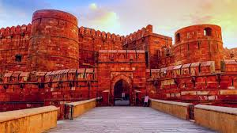
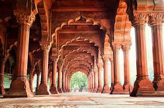
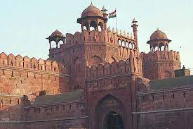
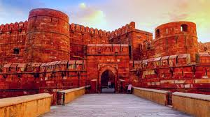
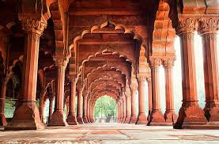
The Red Fort, also known as Lal Qila, is a historic fort in Delhi, India. It was constructed by the Mughal Emperor Shah Jahan in the mid-17th century. The fort's red sandstone walls give it its name, and it served as the main residence of the Mughal emperors for nearly 200 years. The Red Fort is a significant symbol of India's rich history and cultural heritage and is now a UNESCO World Heritage Site. It is a popular tourist attraction, and every year, the Indian Prime Minister raises the national flag here on Independence Day (15th August).
Qutub Minar
 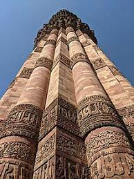
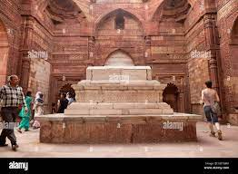
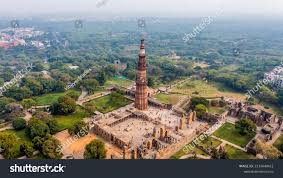
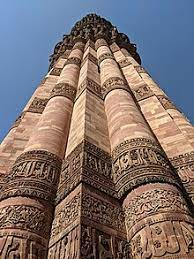
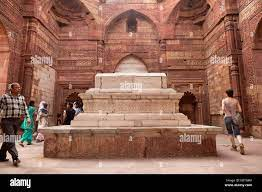
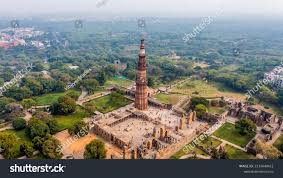
The Qutub Minar is a towering minaret located in Delhi, India. It was built by Qutb-ud-din Aibak, the founder of the Delhi Sultanate, and its construction was completed by his successor Iltutmish in the 12th century. The Qutub Minar is made of red sandstone and marble, standing at a height of 73 meters, with intricate carvings and inscriptions. It is a UNESCO World Heritage Site and an impressive example of early Indo-Islamic architecture.
Khajuraho Group of Monuments
The Khajuraho Group of Monuments is a collection of stunning temples located in Khajuraho, Madhya Pradesh, India. These temples were built between 950 and 1050 CE by the Chandela dynasty and are famous for their intricate and artistic stone carvings, particularly the erotic sculptures. The Khajuraho temples are a UNESCO World Heritage Site and represent the rich cultural and architectural history of India.
In this example, we added information about two more historical places in India: the Qutub Minar and the Khajuraho Group of Monuments. You can continue adding more historical places with their descriptions and images to showcase the diverse and rich cultural heritage of India. Don't forget to include relevant image files (e.g., qutub_minar.jpg and khajuraho_monuments.jpg) in the same directory as your HTML file or update the image URLs accordingly.